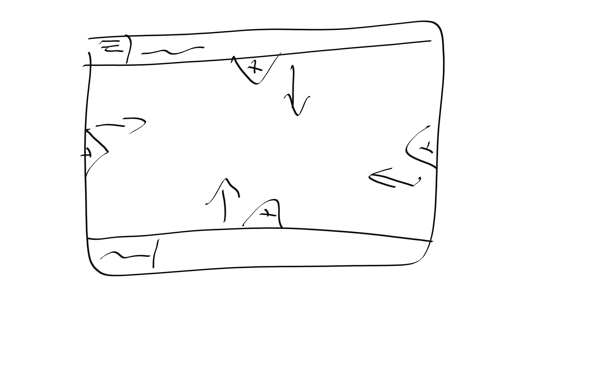

This website has been the final product of my first
term of web development. I had a little experience
of it from Highschool however nothing I produced back
then was up to the standards of this.
I’m, overall,
quite happy with how its turned out and I would only make
a few criticisms. I think the main one would be the glossary
page. While I am very happy with how it turned out, it wasn’t
the best idea when it came to switching over to mobile. I
had to completely re-design the UI which, although not a
problem, was a bit time consuming. I also would probably
try and change how I laid out some of the forms. They are a
bit clunky at times and some of them require labels to indicate
what buttons do. I feel with a better UI design I could have
avoided that.
As far as learning was concerned, I found
the classes invaluable however, I found that I learnt the most
during the process of creating the website. I don’t know if I always
followed the best practice or not but I certainly learnt ways of doing
things that I wouldn’t know otherwise.
Working in a team was
also a good experience as it meant that whenever I got stuck or
wanted advice on an aspect of the design, I could just message the
WhatsApp chat and get advice.
The glossary I found a list
of terms online however I couldn’t find a decent way to do
the referencing, so I changed the list and then used definitions
that I learnt from when I did computer science at school.
I have attached to this page 3 sketches I did to design various
parts of the website. These are also shown on the good practice page.
Sketches are something that I find very useful as it gives
me a visual goal to work towards while focusing on the
actual code.
Finally, I’ve attached the evidence
of validating each webpage.